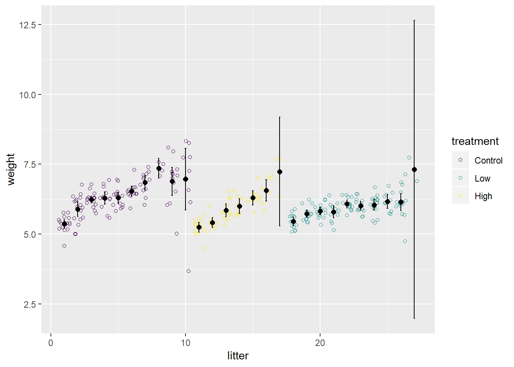
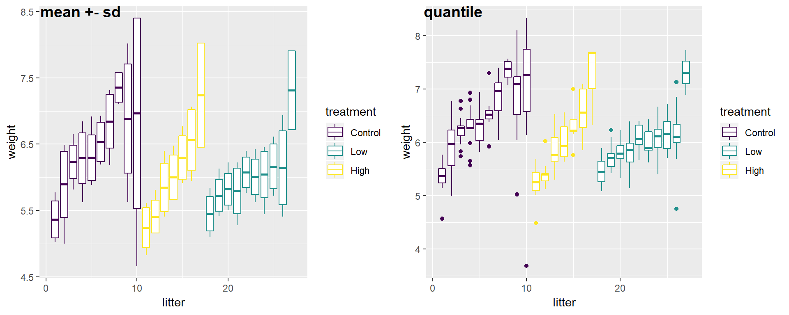
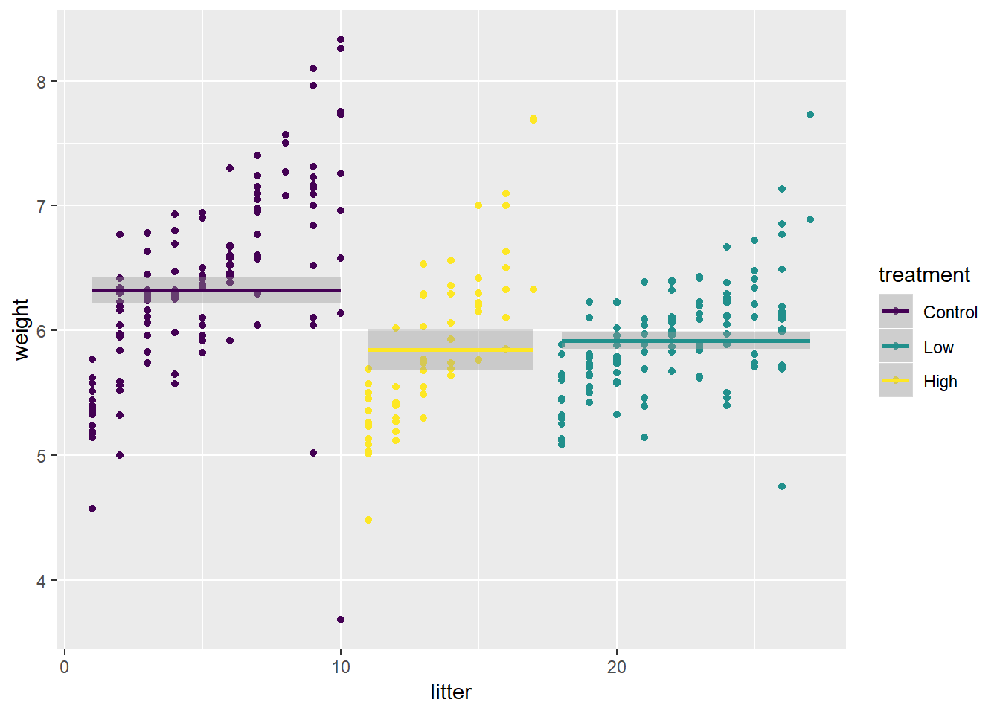

Chapter 3 统计量
library(ggplot2)
pups <- nlme::RatPupWeight %>%
janitor::clean_names() %>%
dplyr::mutate(litter = as.integer(litter))
p <- ggplot(pups, aes(x = litter, y = weight, color = treatment))针对某一个x值，我们可以画出相应y的统计量，比如均值、方差等，这些都可以“手工”的方式通过图层叠加来实现。
p + geom_jitter(shape=1) +
stat_summary(fun.y = "mean", size=2, geom="point", color = 'black') +
stat_summary(fun.data = mean_cl_normal, geom="errorbar", width=.1, color='black')
而图层不单单是画出几何图形而已，有一些是需要计算统计量的，最常见也最容易理解的箱式图图层geom_boxplot，需要计算四分位数，而有一些图层虽然看上去不需要做计算，比如显示误差的geom_errorbar，通常需要我们提供ymin和ymax，然而它按照我们提供的值去显示，没有涉及到图层内部的计算，但这只是默认行为而已，如果有留意ggplot2图层的默认参数的话，大概是会发现很多图层都有一个stat = "identity"的参数，这表示按照输入数据的值来画，不涉及计算，比如画柱状图的geom_col就是这样，它会按照用户输入的计算来画柱子的高度，而geom_bar的参数却不stat = "count"它则会去数数。所以这些图层都有stat参数，意味着我们可以改变默认行为的统计量来画图，比如说箱式图吧，箱体是25%, 50%, 70%的分位数来画的，假设我想用mean-sd, mean, mean+sd来画呢？当然可以。
f <- function(y) {
r <- quantile(y, probs = c(0.05, 0.25, 0.5, 0.75, 0.95))
r[2] <- mean(y) - sd(y)
r[3] <- mean(y)
r[4] <- mean(y) + sd(y)
names(r) <- c("ymin", "lower", "middle", "upper", "ymax")
r
}
p1 <- p + stat_summary(fun.data=f, geom='boxplot', width=.8)
p2 <- p + geom_boxplot(aes(group = litter))
cowplot::plot_grid(p1, p2,
labels = c("mean +- sd", "quantile"))
这一招也是我在Proteomic investigation of the interactome of FMNL1 in hematopoietic cells unveils a role in calcium-dependent membrane plasticity图一中把箱式图的中位数换成均值所使用的方法。
使用stat_smooth(method = "lm", formula = y ~ 1)，可以展示某一x取值区间的平均y值。
p + geom_point() + stat_smooth(method = "lm", formula = y ~ 1)如果要计算中位数的话，可以使用rlm：
library(MASS)
p + geom_point() + stat_smooth(method = "rlm", formula = y ~ 1)